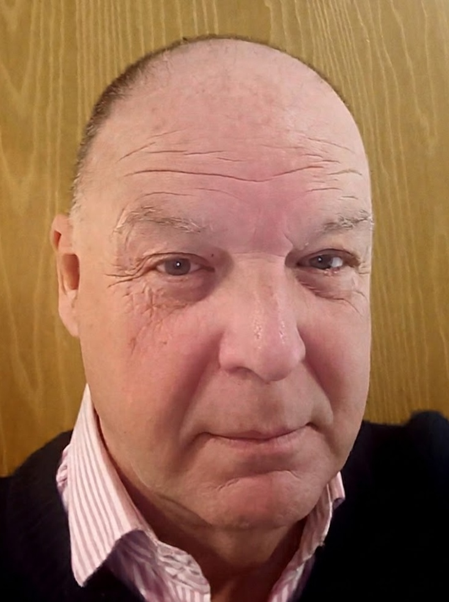

The Board

Chairman
Andrew Carter
Dr.Phil. (Bonn) · MA Cantab · BA (Hons) Cantab · Bar Scholar (Lincoln's Inn)
Founder of Semba AI and innovator behind the Semantic Bathymetry™ methodology. Andrew is a former Chief Risk Officer (FCA SMF4, Ref. 601551) and a Registered European Commission AI Expert (#EX2026D1407552). His professional expertise combines law, governance, semantics and artificial intelligence to ensure robust stewardship and robust data integrity.
Chair, Governance & Oversight Committee
Helen Beaumont-Manahan
Helen has spent her career helping regulated organisations bridge the gap between policy intent and operational delivery. Her expertise spans governance, customer outcomes, vulnerability strategy, quality assurance and regulatory compliance across financial services, utilities and housing. She brings extensive experience in organisational oversight and governance frameworks that support responsible innovation.
Chair, Ethics Committee
Dr Matthew Beard
Dr Matthew Beard is a scientist and innovation strategist with internationally recognised expertise in neuroscience and translational research. Following doctoral studies at the University of Glasgow, he undertook postdoctoral research at Yale University and Columbia University, including work in the laboratory of Nobel Laureate Professor James E. Rothman. He is currently Senior Director, External Innovation (Neuroscience and Rare Disease) at Ipsen, where he leads evaluation and in-licensing of external drug development opportunities, including commercial due diligence, deal structuring and negotiation across multiple completed licensing transactions. He brings to Semba AI extensive experience in scientific evaluation, commercial and regulatory due diligence, research governance and the ethical assessment of emerging technologies.